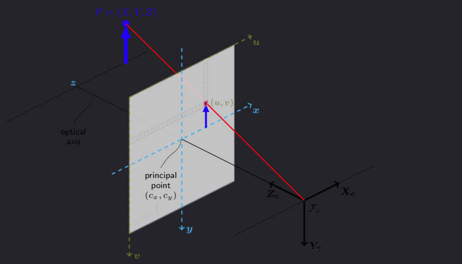

相机参数
1.相机坐标系

相机中有四个坐标系
- 世界坐标系：可以任意指定\(x_w\)轴和\(y_w\)轴
- 相机坐标系：原点位于小孔，z轴与光轴重合，\(x_c\)轴和\(y_c\)轴平行投影面
- 图像坐标系：原点位于光轴和投影面的交点，\(x_p\)轴和\(y_p\)轴平行投影面
- 像素坐标系：从小孔向投影面方向看，投影面的左上角为原点，uv轴和投影面两边重合
一般来说，标定的过程分为两个部分：
- 第一步是从世界坐标系转为相机坐标系，这一步是三维点到三维点的转换，包括R，T（相机外参，确定了相机在某个三维空间中的位置和朝向）等参数
- 第二部是从相机坐标系转为成像平面坐标系（像素坐标系），这一步是三维点到二维点的转换，包括K（相机内参,是对相机物理特性的近似）等参数
2.齐次坐标系
齐次坐标(Homogeneous coordinate)就是将一个原本是n维的向量用一个n+1维向量来表示，是指一个用于投影几何里的坐标系统，如同用于欧氏几何里的笛卡儿坐标一般。给出点的齐次表达式[X Y H]，就可求得其二维笛卡尔坐标，即$ [ X : Y : H ] = [ : : ] = [ X : Y : 1 ]$， 这个过程称为归一化处理。 在几何意义上，相当于把发生在三维空间的变换限制在H=1的平面内。同时在齐次坐标系下(1, 2, 3), (2, 4, 6),(4, 8, 12)对应同一个欧几里得点(1/3, 2/3)，因此这些点是同一个点，这使得在透视空间里，两条平行线可以相交得到了解决(近大远小)。

许多图形应用涉及到几何变换，主要包括平移、旋转、缩放。以矩阵表达式来计算这些变换时，平移是矩阵相加，旋转和缩放则是矩阵相乘，引入齐次坐标的目的主要是合并矩阵运算中的乘法和加法。引入齐次坐标后，平移、旋转、缩放可以表示为： \[ \begin{align} & 平移变换： \left[\begin{array}{lll} x^{\prime} & y^{\prime} & 1 \end{array}\right]=\left[\begin{array}{lll} x & y & 1 \end{array}\right]\left|\begin{array}{ccc} 1 & 0 & 0 \\ 0 & 1 & 0 \\ \mathrm{~d} x & \mathrm{~d} y & 1 \end{array}\right| \quad \\ & 旋转变换： \left[\begin{array}{lll} x^{\prime} & y^{\prime} & 1 \end{array}\right]=\left[\begin{array}{lll} x & y & 1 \end{array}\right]\left|\begin{array}{ccc} \cos{\theta} & \sin{\theta} & 0 \\ -\sin{\theta} & \cos{\theta} & 0 \\ 0 & 0 & 1 \end{array}\right| \quad \\ & 缩放变换： \left[\begin{array}{lll} x^{\prime} & y^{\prime} & 1 \end{array}\right]=\left[\begin{array}{lll} x & y & 1 \end{array}\right]\left|\begin{array}{ccc} S_x & 0 & 0 \\ 0 & S_y & 0 \\ 0 & 0 & 1 \end{array}\right| \end{align} \]
3.相机内外参数
相机外部参数
- 3个旋转矩阵参数R(绕x,y,z轴)
- 3个平移矩阵参数T(沿x,y,z轴)
camera to world(c2w)：
设\(P_c\)为\(P\)在相机坐标系下的坐标，\(P_w\)是其在世界坐标系下的坐标，可以使用一个旋转矩阵
R和一个平移向量t，将\(P_c\)变换为\(P_w\): \[ P_c = RP_w + t \] 其中R是一个3×3的旋转矩阵，t是3×1的平移向量，一下为齐次坐标形式： \[ \left[\begin{array}{c} X_{c} \\ Y_{c} \\ Z_{c} \end{array}\right]=\left[\begin{array}{lll} R_{11} & R_{12} & R_{13} \\ R_{21} & R_{22} & R_{23} \\ R_{31} & R_{32} & R_{33} \end{array}\right]\left[\begin{array}{l} X_{w} \\ Y_{w} \\ Z_{w} \end{array}\right]+\left[\begin{array}{l} t_{1} \\ t_{2} \\ t_{3} \end{array}\right] \quad \Rightarrow \quad \left[\begin{array}{c} X_{c} \\ Y_{c} \\ Z_{c} \\ 1 \end{array}\right]=\left[\begin{array}{cccc} R_{11} & R_{12} & R_{13} & t_{1} \\ R_{21} & R_{22} & R_{23} & t_{2} \\ R_{31} & R_{32} & R_{33} & t_{3} \\ 0 & 0 & 0 & 1 \end{array}\right]\left[\begin{array}{c} X_{w} \\ Y_{w} \\ Z_{w} \\ 1 \end{array}\right] \]将旋转矩阵
R和平移向量t带入： \[ \left[\begin{array}{c} X_{c} \\ Y_{c} \\ Z_{c} \\ 1 \end{array}\right]=\left[\begin{array}{cc} R & t \\ 0^T & 1\\ \end{array}\right]\left[\begin{array}{c} X_{w} \\ Y_{w} \\ Z_{w} \\ 1 \end{array}\right] \] 上面就推导出了相机的外部参数T: \[ T=\left[\begin{array}{cc} R & t \\ 0^T & 1\\ \end{array}\right] \]相机内部参数
内参矩阵K为： \[ K = \left|\begin{array}{ccc} f_x & 0 & u_0 \\ 0 & f_y & v_0 \\ 0 & 0 & 1 \end{array}\right| \] \(f_x=\frac{f}{d_x} \:, f_y=\frac{f}{d_y}\)
f：焦距，单位毫米
dx：像素x方向宽度，单位毫米(一个像素在感光板上是多少毫米)
f/dx：使用像素来描述x轴方向焦距的长度
f/dy：使用像素来描述y轴方向焦距的长度
u0,v0,主点的实际位置，单位也是像素
相机中心射出的一条光线在成像平面上的投影点。它也被称为“主光轴交点”或“光心”。